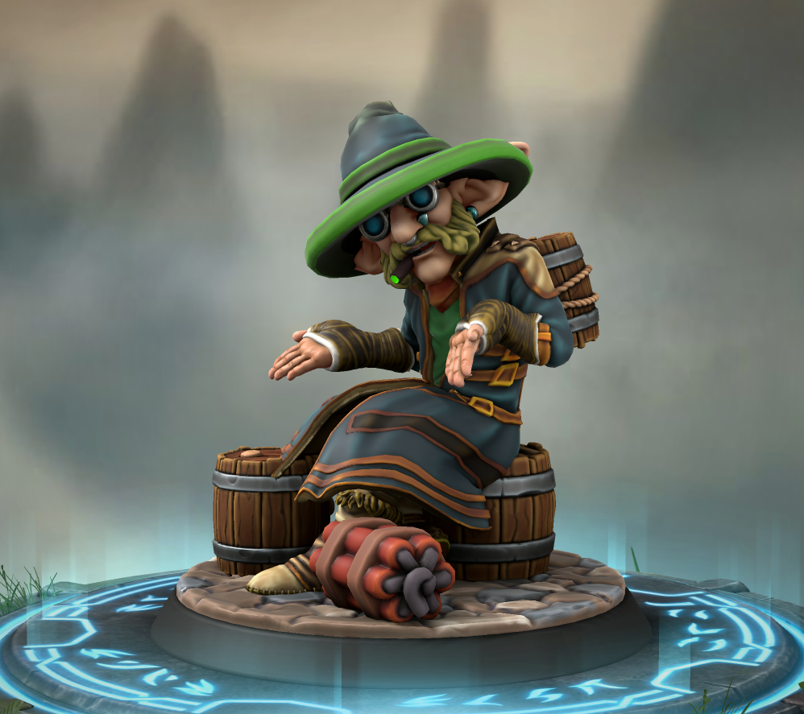

Basalt Obsittjansonn Lonsdaleit
gnome tun, was gnome tun
An meine frühe Zeit als kleiner Gnömling erinnere ich mich kaum. Die meisten Erinnerungen: mehr Erzählungen und Träume als alles andere.
Eine gute Familie eine ruhige Zeit. Gemeinschaftliches zusammenleben so grau wie der Boden unter unseren Füßen, nicht spannend, aber fest und einheitlich. Die meisten Gnome hielten sich an Tradition und Regeln. Die Obsittjansonns - meine Familie - waren da keine Ausnahme. Nur selten hörte man mal von einem Gnom, der die Tiefen verlassen wollte, um an der Oberfläche neu anzufangen. Noch seltener versuchten Gnome weiter in die Tiefen hinabzusteigen. "Er, der Ruht" soll dort leben. Auch wenn von einigen verehrt - kein Zeitgenosse dem man zu nahe kommen möchte.
Meine erste echte Erinnerung ist sehr viel schärfer als das. Wie bei vielen Gnömlingen stammen diese vom "großen Zusammenbruch": Nach und nach begann die Erde zu beben, das Besteck bewegte sich über die Tische, die Möbel wanderten durch die Zimmer, die Wände begannen zu krächzen. Dann begann es: Brocken fielen von der Decke, Säulen gaben nach, schreie aus den Tunneln. Ich wusste noch nicht was Tod war, was Leid und Schmerz bedeutet. Alles Themen über die Gnom nicht spricht.
Ein Gnom in der Halle fiel zu Boden... Er blieb regungslos. Jeder Gnömling lernt schon jung: Meide Gnome zu Bode. Kein Gnömling weiß warum, aber wer noch keinen eigene Hacke hat, der hinterfragt die Elteren nicht. Der Gnom jedenfalls erstarrte. Wie eine Statue lag er da, die Haut ergraute und man hörte ein leises Knacken. Plötzlich knallte es - das Geräusch ging fast unter zwischen dem Lärm drumherum - aber ich war so fokussiert und interessiert: was passieren würde. Der Körper zersprang und versteinerte Körperteile verteilten sich in der Halle. Sie wurden schnell begraben unter dem restlichen herabfallenden Gemäuer.
Jetzt viel mir auf, dass ähnliche Knallgeräusche aus allen Tunneln kamen. Noch bevor ich realiseren konnte was das bedeutet - ich war schließlich maximal ein Drei-Kiesel-Hoch - öffnete sich inmitten der Halle ein riesiger Abgrund. Fast viel ich hinein, aber jemand hielt mich am Hemdrücken und zog mich hinaus.
Ich blickte in den Abgrund. Warscheinlich nur für den Bruchteil eines Augenblicks, aber es fühlte sich an wie eine Ewigkeit. Eine Angst zu fallen machte sich nicht in mir breit. Glühendes Rot - heute weiß ich nichts im vergleich zu einer Sonne, aber damals für mich schön wie das Leben selbst. Leuchtende Erruptionen, Feuer und ein See aus Lava. Ich war wie verzaubert.
So faziniert, es hat einige Zeit gedauert, bis ich wieder zu mir kam. Mein Vater hatte mich um den Bauch gebunden. Einige Gnome aus undere Stadt wuselten mit uns durch die Tunnel. Viele weinten. Es bebte noch immer, aber nicht so wie zuvor. Wir waren wohl schon weiter entfernt.
Wir liefen bis in eine andere große Höhle. Hier war es kälter. Meine Eltern erzählten mir wir seien näher an der Oberfläche. Vielen der Älteren missfällt das, aber wir haben alle keine Wahl. Ab jetzt bleiben öfter Erinnerungen.
Nach einigen Monaten haben die Meisten ihre Unterkünfte fertig. Auffällig ist, dass wir jetzt eher ein kleines Dorf als eine Stadt sind. Viele Gnome blieben zurück. Dennoch gab es zu wenig zu Essen. Das meiste kam von Leuten von außen, die jetzt häufiger da waren. Seltsames Volk: Kleine Nasen, kleine Augen, dafür oft fett und haarig. Hässliche Gestalten, dachte ich mir damals. Es waren Zwerge. Unfreundliches und grimmiges Volk. Es machte Sinn, dass Gnome nicht weiter nach oben wollen. Wenn alle Lebewesen an der Sonne so sind, dann wird das kein schöner Ort sein. Dafür hatten sie Nahrungsmittel und andere Interessante Dinge dabei. Wenigstens gute Bergarbeit wussten sie zu schätzen.
So bekam ich früh meine erste eigene Hacke. Es machte Spaß sich mit den anderen durch den Stein zu arbeiten. Besonders wenn man etwas wertvolles ausgrub, das man gegen ein gutes Stück Trockenfleisch oder ein schönes hartes Brot tauschen konnte. Doch die Arbeit war nicht ansatzweise so ertragreich, wie wohl in unserer alten Stadt. Ich habe nur geschichten Gehört von Smaragden so groß wie Köpfen und Rubinen so Rot wie Lava. Der Alte Steinkohl erzählte uns nach dem Gesteinsunterricht immer noch gerne etwas aus der alten Zeit. Oft leuchteten seine Augen auf, während er erzählte für einige Momente, immer mehr für jedes Detail in dem er sich verlor. Bis sie wieder verblassten und er zurück ins jetzt gekommen schien. Wir wussten nicht viel über den Alten Steinkohl, aber er wirkte nur glücklich, wenn er an früher dachte.
Bald fingen wir Gnömlinge an uns über die Zukunft Gedanken zu machen. Es war Tradition, dass jeder Gnom, die Arbeit seiner Ahnen weiter führt, die einzig andere Möglichkeit war die Arbeit der Familie des Partners weiterzuführen. So hielt sich die Arbeit immer im Gleichgewicht, es waren immer genug Gnome für jede Arbeit da. Das änderte sich mit dem großen Zusammenbruch. Also entschieden die Ältesten, dass einige Jahre nach der ersten Hacke, die Gnömlinge andere Arbeit ausprobieren dürfen. Liegen die Steine für sie hier besser, so wird ihnen die ehrenvolle Aufgabe zuteil, diese Arbeit unter dem Namen einer entsprechenden Familie fortzuführen. So sollen es wohl auch unsere Urahnen gemacht haben, bevor genug Gnome für die Arbeit da waren.
Das hieß auch wir lernten etwas über jede Arbeit die es gab. Tischler, Händler, Mineriere - also die, die die Mienen graben, Steinmetze. Nicht alle davon konnte man sich aussuchen. Für viel der Arbeit waren genug Gnome da. Doch für manche Arbeit kam ein Gnom in die Unterrichtshöhle, der von seiner Arbeit erzählte. Das hieß dann, die Familie hat zu viel Arbeit und man könnte bei ihnen zu Arbeiten lernen. Da Minierier - wie in meiner Familie - ein guter Beruf ist, kam nichts für mich davon in Frage. Wir hatten selber genug zu arbeiten, auch wenn ich der kleinste und schwächste der Gnömlinge der Familie war.
Zum Schluss kam der Alte Steinkohl herein. Unser Lehrer säufste: "Steinkohl, zu dir wollte noch nie einer, lass es doch gut sein." Doch Steinkohl ignorierte ihn und setzte sich vor uns Gnömlinge. Wir alle dachten er sei eigentlich Lehrer, doch das sollte sich als falsch heraus stellen. Er fing an zu erzählen:
"Meine kleinen Gnömlinge. Ich bin der letzte Gnom meiner Arbeit. Eine Arbeit, die aus den kleinen gnomnomadischen Völkern von Alsmal Zivilisationen gemacht hat. Zivilisationen größer als die von Zwergen. Das was wir im großen Zusammenbruch verloren, das ist das wofür wir meine Arbeit brauchen. Die Steinmetze formen den Stein und die Mineriere den Fels. Beies ehrenwertes Handwerk, sie ermöglichen es unsere Rohstoffe zu formen und zu erschließen. Doch der Steinmetz ist fürs Minerieren zu filigran, stellt euch nur vor, wie der Steinmetz versucht das Erz mit seinem kleinen Meißel aus dem Berg zu arbeiten. - Ein Kichern ging durch die Klasse - Aber anders herum sieht es nicht besser aus, sonst wären die Thröne der Ältesten - einige der schönsten Kunstwerke der Gnome - wohl eher gemütliche Häufchen Staub! - Die Klasse lachte kurz auf, der Alte Steinkohle hat es einfach drauf - . Doch was ist der schönste Thron ohne Saal den er schmückt, wie kommen wir an die Adern, aus denen die Mineriere das Erz schürfen? Einige Gnome müssen in Höhlen aus Holz leben, in Hallen, die für besseres da wären. Das macht mich sehr traurig. Die Arbeit meiner Familie war es für jeden eine dunkle Höhle bereit zu stellen. Wir haben die größten Hallen aus der Erde geholt. Einst haben die ersten Gnome mit unserer Arbeit so viel bewegt, dass an der Oberfläche Berge und Täler entstanden sind, hoch wie hunderte Haupthallen! Das ist meine Arbeit denn ich bin ein Former!"
Steinkohl öffnete die Hand, ließ etwas in die Luft, es gab einen Knall, ein Feuer in mitten der Luft die warme Welle flog durch den Raum und es wurde wieder dunkel.
Ich war gebannt. In mir stieg ein Gefühl von Euphorie, Neugier und Faszination. Doch dann rief unser Lehrer: STEINKOHL!. Ich schaute mich um. Die anderen Gnömlinge hatten die Augen panisch aufgerissen oder fest verschlossen vor Angst. Einige verkrochen sich unter den Tischen, einige zitterten und Tränen liefen ihnen über das Gesicht.
"Erst nahm mir die Erde alles was ich hatte und jeden der mir lieb war und jetzt traut sich kein Gnom mehr auch nur in die Nähe meiner Arbeit. Explosionen, Feuer, Hitze, waren einmal das, was einen Gnom ausgemacht haben. Aber das scheint endgültig vorbei", säuftzte Steinkohl. Er verließ die Unterrichtshöhle, einige ältere Gnome stürmten aufgewühlt hinein. Trösteten die andere Gnömlinge.
Ich konnte die Nächte darauf kaum schlafen. Meine Gedanken rasten. Ich träumte von Lichtern, Explosionen und Hitze, die Steine zum schmelzen bringt. Es fühlte sich so lebendig an, so aufregend. All das, was mich in meiner ersten Erinnerung so fasziniert hatte.
Kurz darauf ging ich zum Alten Steinkohl. Er hatte die gleiche Trauer in den Augen, wie sonst, wenn er nicht von früher erzählte. Vielleicht sogar noch etwas trauriger. Ich fragte ihn, ob ich seine Arbeit lernen könne, mir gefielen die Explosionen, das schöne Licht und die Wärme. Steinkohl hieß nicht um sonst Alter Steinkohl. Er war alt genug um ein Ältester zu sein, hatte aber keine Abitionen in die Richtung. Seine Augen fingen an zu leuchten, um seine Augen bildeten sich die tiefsten Freudenfalten und voller Euphorie packte er meine Hand und fing an zu erklären, zu zeigen, zu lehren. Wir verstanden uns schon immer gut, und ich fand auch früher schon seine Geschichten interessant, aber ab diesem Moment waren wir tiefer verbunden als die tiefste Grotte in der tiefsten Höhle.
Es stellte sich heraus, dass ein Former nicht alleine im Gestein arbeiten kann. Unter der Erde kann zu viel schief gehen. Und da Steinkohl der einzige war, konnte er nicht formen. Also hat er einfach an anderer Stelle geholfen. Auch wenn seine Leidenschaft immer das lehren des Formerhandwerks war. Nach etwas Zeit erklärte ich, ich wolle seine Arbeit weiter führen. Damit bekam ich seinen Namen. Zu unser aller Überraschung war Steinkohl sein Vorname. Steinkohl Lonsdaleit. Das Machte mich zu Basalt Obsittjasonn Lonsdaleit.
Nach einigen Jahren kamen sogar noch ein paar andere Gnömlinge dazu. Keiner von ihnen konnte sich an den großen Zusammenbruch erinnern. Die meisten waren danach geboren und dennoch gingen viele wieder. Als Mineriere hatte meine Familie immer Bedenken, dass ich zu klein, zu schmächtig war. Große Hämmer waren oft größer als ich, an tragen oder gar schwingen war kaum zu denken. Als Former war ich perfekt. Ich kam in die kleinsten Lücken, konnte Sprengstoff in die tiefsten Ritzen schieben. Ich war wie dafür gemacht und Spaß gemacht hat es mir auch.
Mit der Zeit ging es dem Dorf besser. Die meisten hatten eigene Höhlen, wir konnten durch unsere Arbeit neue Adern erschließen. Es ging uns gut. Gelegentlich kamen auch andere Völker, um mit uns zu handeln.
Spannend was es für Wesen gibt, vor allem Menschen - von denen es wohl am meisten geben soll - kamen. Deren Größe hat mich sehr beeindruckt. Wir mussten einige unserer Tunnel in die große Halle anpassen, damit sie nicht auf allen vieren krabbeln müssen. Erstaunlich, wenn man hört, dass es Kreaturen gibt, die von Menschen als riesig bezeichnet werden.
Irgendwann kamen die Zwerge seltener, es gab regelmäßiger Streit mit ihnen um Schürfrechte, Rohstoffpreise, Warenzölle. Wir bekamen viel bessere Preise von Menschen als von Zwergen. Aber scheinbar wurden so die Zwerge viele ihrer Rohstoffe nicht mehr los. Die Spannung stieg bis eines Tages ein illegaler Zwergeschacht in der Nähe eines unserer Schächte zusammenbrach. Wir hatten grade wieder eine florierende Stadt errichtet, da kam die Katastrophe. Der Krieg von Zwergen und Gnomen.
Die Zwerge fielen in unsere Schächte ein. Auch wenn wir besser mit der Erde und dem Stein arbeiten können. Den Waffen und Rüstungen von Zwergen können wir nur wenig entgegensetzen. Wir versuchten sie aufzuhalten, indem wir Schächte einstürzen ließen und Wege versperrten. Wir bekamen Waffen und Rüstungen von den Menschen, so konnten wir auch kämpfen. Aber die meisten Rüstungen waren für Goblins, die bei den Menschen leben. Allerdings sind diese meist von minderer Qualität, da Goblins kaum wohlhabend sind. Und Menschenwaffen sind zu groß für Kämpfe in Höhlen. Die Kämpfe waren meist blutig und die Zwerge kamen unseren Haupthallen immer näher. Eingestürzte Tunnel konnten sie nicht ewig aufhalten. Außerdem bekamen sie Unterstützung von anderen Zwergenvölkern nicht zuletzt den radikalen Dunkelzwergen, sie sind uns ähnlicher als die normalen Zwerge. Sie haben hellere Haut und haben Probleme mit Sonnenlicht. Aber sie sehen Zwerge als überlegene Rasse an. Oft haben sie auch Probleme mit den anderen Zwergen, aber im Krieg scheint das egal.
Als die meisten Gänge zwischen den Haupthallen und den Zwergen gesprengt waren versammelten wir uns mit Steinkohl. Wir hatten mittlerweile unterstützung auch von anderen Völkern, Goblins, Menschen, eigentlich alle die Probleme mit Dunkelzwergen haben. Steinkohl nahm uns mit zum Kriegsrat. Der Kriegsrat bestand aus den Ältesten, und Verträtern der anderen Parteien, auch Steinkohl gehörte dazu. Er schilderte die Lage, dass wir weiter nicht zurückweichen können. Über die letzten Monate des Krieges wurde der Ruf nach einem Gegenschlag immer lauter. Die Zwerge würde nicht aufhören, bevor wir nicht vertrieben, vernichtet oder unterworfen sind.
Also machten wir einen Plan, mit dem, was wir besser können als sie. Formen. Bisher hatten wir nur unsere eigenen Tunnel zerstört. Jeder davon brach Steinkohl ein kleines bisschen das Herz. Alles was er so liebevoll aufgebaut hatte, seine ganze Hoffnung, dass Gnome wieder zu dem werden, was sie einmal waren. Er war nicht mehr der selbe. Ich auch nicht. Aber wir liebten beide noch Explosionen. Wir arbeiteten uns mit den anderen Formern in die Tunnel der Zwerge vor. Wochen lang versteckten wir uns und gruben zwischen ihren Tunneln. Abgeschnitten von der Außenwelt und zu Hause. Kein Zwerg kann sich so gut im Stein verstecken wie ein Gnom. Wir wussten wie fragil Zwerge ihre Tunnel bauen. Sie konnten den Fels nicht so gut lesen wie wir. Es war fast beeindruckend, auf wie wenigen Pfeilern eine Zwergenstadt errichtet wird. Die Zwerge schienen jeden Fortschritt feiern zu können, wärend unsere Familien zu Hause wieder hungerten und jeden Tag mit Angst lebten. Diese Angst tieb uns an. Sowie die Hoffnung auf Befreiung.
Das was wir diese Nacht getan haben, stand gegen alles wofür Former stehen. Wir alle wussten, dass es eine Schande ist große Kunst in Stein zu zerstören, aber die Zwerge ließen uns keine Wahl. Als wir die Explosionen zündeten fühlte sich die Erde an wie damals. Alles beebte, wir hatten Wochen damit zugebracht alles vorzubereiten und die Stadt der Zwerge versank erst im Chaos, dann im Berg selbst. Man sagt der Gipfel des Berges sei in dieser Nacht einfach im Berg versunken.
Als wir zurück kamen waren wir.. noch am leben. In den Wochen, die wir in den Tunneln der Zwerge verbrachten haben diese viele unserer Hallen zerstört. Es waren nur noch wenige Gnome da. Vielleicht hundert. Vermutlich weniger. Ein gebrochenes Volk. Die Zwerge waren weg, sie hätten einen großen Triuph gefeiert, als sie unsere große Halle eingenommen haben. Die, die die Stellung hielten seien vor kurzen überhastet abgezogen. Vermutlich hat sie erreicht was mit ihrer Heimat passiert ist.
Viele der Gnome sind in den Süden geflüchtet, da soll es eine andere Gnomgemeinde geben, dahin sind schon einige gegangen, auch bevor wir zu den Zwergen gegangen sind. Aber die Gemeinde war zu klein um uns alle zu beherbergen. Eine andere soll im Osten liegen, die Gnome da haben zwar eine lustige Mundart, aber leben über der Erde, das kam für viele nicht in Frage. Der Alte Steinkohl hatte wohl selber Vorfahren die in den Osten gegangen sind, also hat er die anderen begleitet. Er sagte mir er sei troz allem stolz auf mich. Ich solle die Welt erkunden, etwas finden was mich glücklich macht. Das sei wichtiger als Explosionen und Traditionen.
Der Berg war leer. So viel erlebt und nach alledem sehe ich das erste Mal die Oberfläche. Mein erster Baum, mein erster Rasen, der erste Mondschein. Ich hielt ihn erst für die Sonne - ein Irrtum, nur der Vollmond. Schon etwas grell, aber kein Vergleich zur echten Sonne, wie ich am Morgen feststellen würde.
Ich bin mit einigen der Kämpfer weiter gezogen. Wir haben einiges erlebt - vieles auf das ich heute nicht stolz bin. Mein Wissen um und meine Freude an Explosionen war gefragt und wir waren sehr erfolgreich. Aber irgendwann war es genug. Die Welt war vielerorts an ähnlichen Abgründen, viele Gnome kennen einen "großen Zusammenbruch", der sie ähnlich viel gekostet hat.
Nachdem wir einige Rebellionsgruppen geholfen hatten, viele meiner Freunde und Kriegskameraden allerdings gefallen waren, war es mir genug. Ich bin gegangen. Ich bin an den entferntesten Ort geflüchtet, den ich finden konnte. Ich habe eine kleine Hütte, mit einer kleinen Höhle darunter. Ein Feld und ein kleines Dorf in der Nähe. Ich habe wenig, aber ich rede mir ein, dass es reicht.
... oder nicht?
